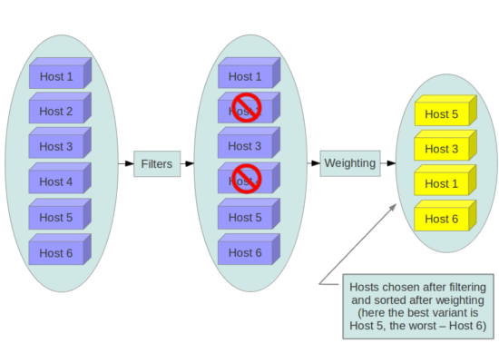

Julien Brun
Maxime Mouchet
Cloud Privé
avec OpenStack
Tuteur : Frédéric Pourraz


- Présentation du projet
- Présentation du projet
- OpenStack vu de l'intérieur
- Présentation du projet
- OpenStack vu de l'intérieur
- Conlusion, et perspectives
Notre projet
Mettre en place un Cloud Privé à l'IUT
Automatiser la configuration des machines
Ju
Mettre en place un Cloud Privé à l'IUT
Automatiser la configuration des machines
Ju
Le Cloud Computing et la virtualisation
Dématérialisation et décentralisation
Max
Dématérialisation et décentralisation
Max
Intérêts
- Mise en production et dimensionnement facilité
- Réduction des côuts
Expliquer différences Virtualbox etc...
Pas de matériel à entretenir, mettre à jour
Ju
Pas de matériel à entretenir, mettre à jour
Ju
Modèles
- SaaS
- PaaS
- IaaS
- *-aaS
DaaS: mashups, NaaS: Software Defined Networking
Max
Max
Deux choix
Cloud Public
- Géré par une entreprise tierce
- Situé à l'extérieur de l'entreprise
- Ressources partagés entre les clients
- Paiement à l'utilisation (par heures)
Max
Cloud Privé
- A l'usage exclusif d'une entreprise
- Achat du matériel
- Mise en place et administration
Ju / Sécurité intérêt principal
Qu'est ce que c'est ?
OpenStack c'est :
- Un ensemble de logiciels permettant de construire des infrastructures en tant que service.
- Une architecture modulaire facilitant le déploiement et la mise à l'échelle.
- Gratuit et Open Source.
- Soutenu par des grandes entreprises tels que HP, Cisco, IBM, Intel, ...
- Une communauté active sur Internet (mailing-lists, wikis, blogs).
Max
OpenStack ça n'est pas :
- Un système d'exploitation
- Un logiciel de virtualisation (hyperviseur)
- Un logiciel unique, en une seule partie
Ju
Architecture OpenStack

Max, expliquer hyperviseur
Comment ça marche ?
Ju
- Keystone
- Nova
- Cinder
- ...
Middlewares
Application WSGI à la fois cliente et serveur
WSGI
Web Server Gateway Interface
WSGI n'est pas un logiciel, juste une spécification
"Qui implémente les deux interfaces"
"Qui implémente les deux interfaces"
Python => facilement portable
Modulaire
Modulaire
Deux moyens de communication
Vers les applications tierces
API
Application Programming Interface
REST
REpresentational State Transfer

Avantages
- Haut niveau, compréhensible
- Utilisable dans ~ tout les languages de programmation
Inconvénient
- Lourd, overhead important (protocole HTTP, mode texte)
Pas optimisé pour la communication inter-services
Entre les services
AMQP
Advanced Message Queuing Protocol
Avantages
- Rapide, faible overhead
- Fiable
Inconvénient
- Plus compliqué à implémenter
- Pas utilisable directement (ex. en ligne de commande)
Idéal pour la communication inter-services
Le scheduling
Comment répartir les instances virtuelles et le stockage ?
Exemples
Filters
- RamFilter
- CoreFilter
- SameHostFilter
- SimpleCIDRAffinityFilter
Costs and Weights
- fill_first_cost_fn
- retry_host_cost_fnr
BladeCenter
Fiabilité
Scalabilité
Haute densité
Stockage indépendant
expliquer ce que c'est, serveurs lames, dense, etc, stockage peut etre distant
blade == lame
Réseau redondant
blade == lame
Réseau redondant
Le BladeCenter R&T
Caractéristiques
- Serveurs blade HP de 2007
- Bi-processeurs 64 bits
- 4 ou 8 Go de RAM
- Stockage SAN HP StorageWorks
Mais... pas adapté à la virtualisation
- Processeurs anciens qui ne supportent pas les extensions VT
- Chipsets incompatibles avec les systèmes récents
- Manque de RAM
Ju, VT : Permet à l'hyperviseur d'envoyer directement les instructions au processeur
Idéal OpenStack: au - 32 voir 48Go de Ram par Lames
Proc mono-coeurs
Idéal OpenStack: au - 32 voir 48Go de Ram par Lames
Proc mono-coeurs
Conclusion
- Limité par le matériel
- Mais tout le cahier des charges à été réalisé
Perspectives
- Utiliser du matériel plus récent
- Installer un hyperviseur plus performant
- Augmenter la redondance
expliquer motion, migrations machines